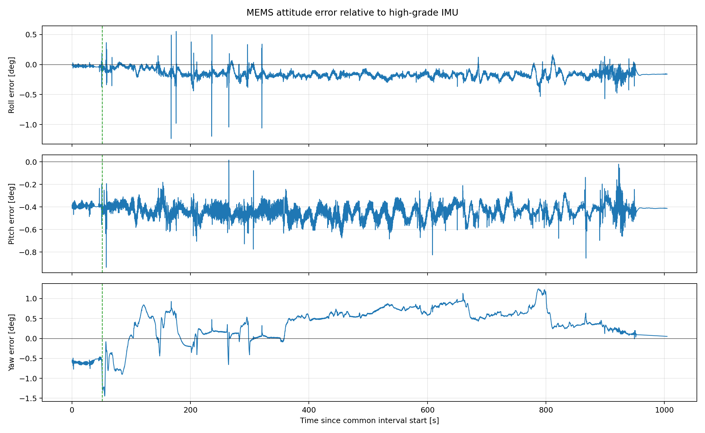
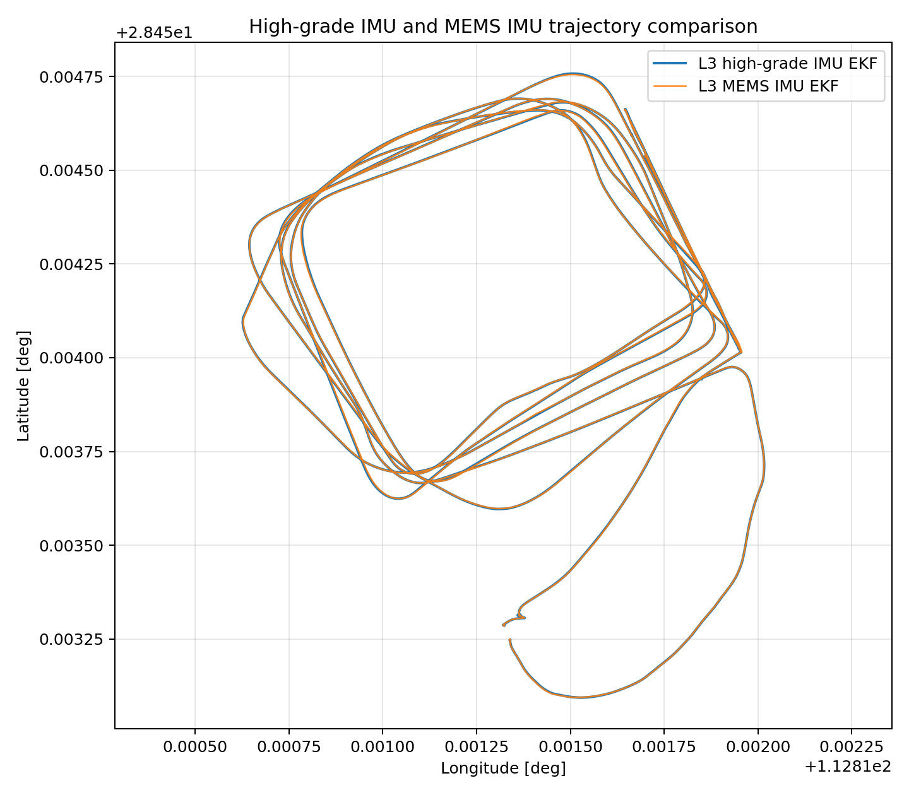
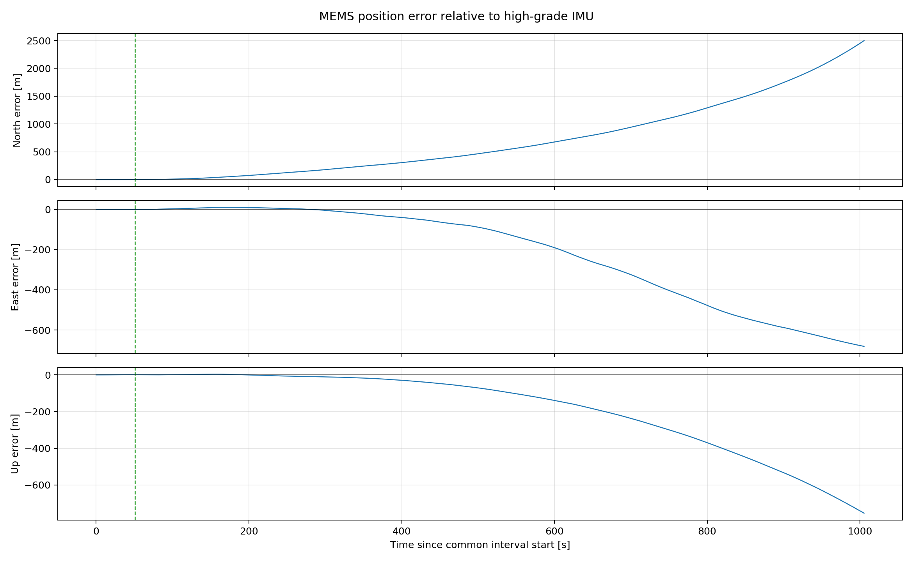
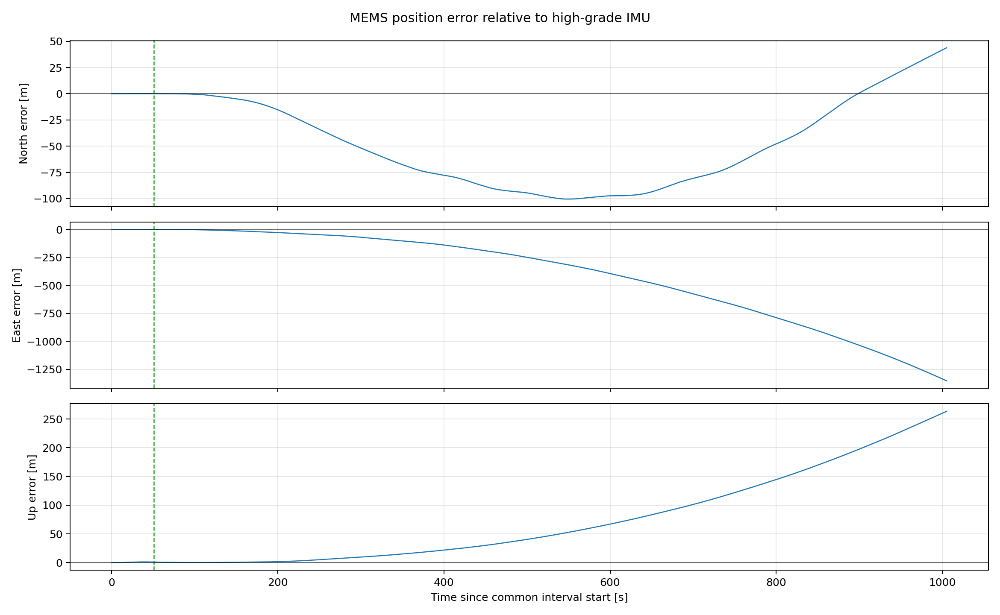
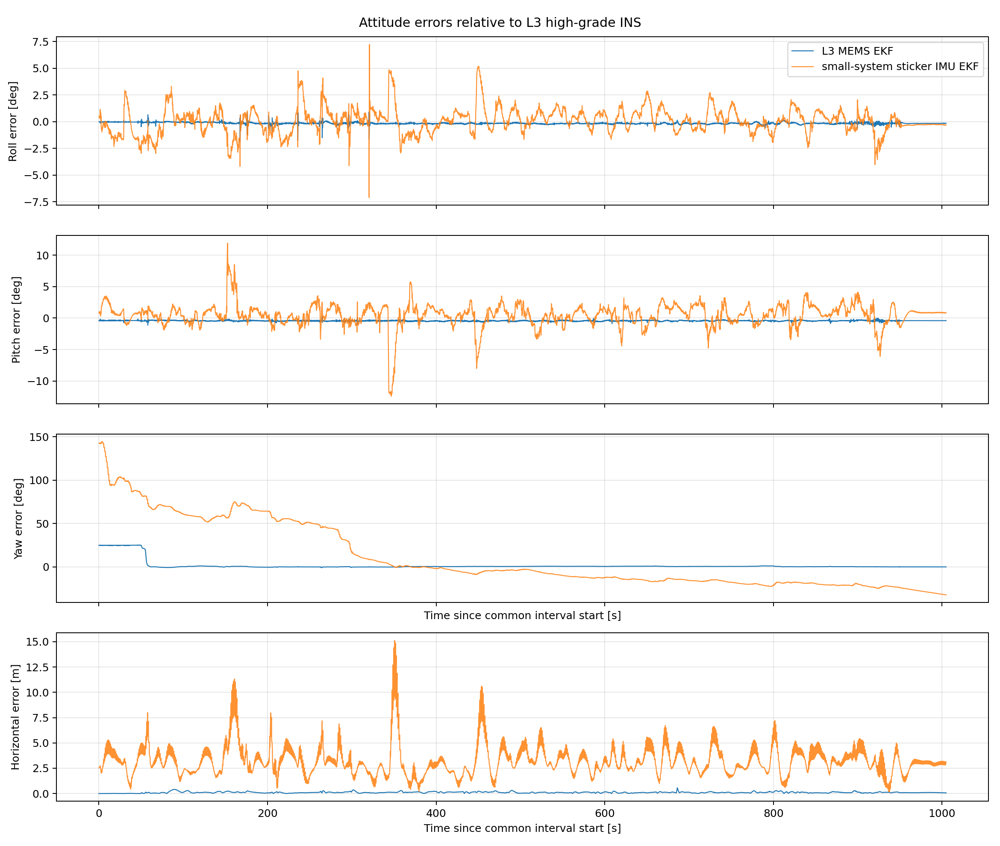
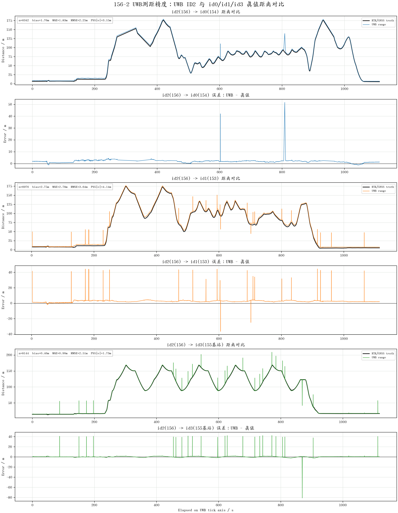
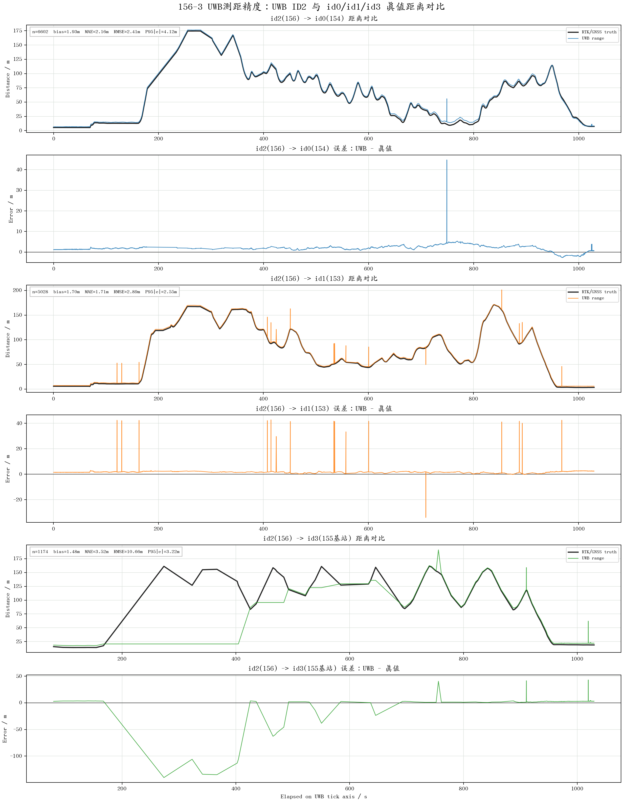
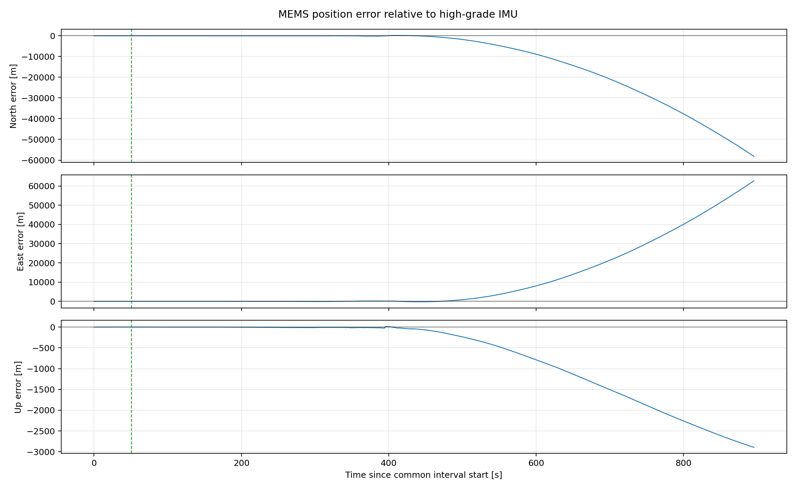

| 报告类型： | 毕业论文式阶段实验报告 |
| 数据批次： | 铜官窑实验、L3惯导与156节点实验 |
| 算法平台： | 15状态误差状态EKF组合导航程序 |
| 形成日期： | 2026年7月20日 |
本文整理了近期多源惯性导航、GNSS组合导航和UWB协同测距实验，筛选出具有明确输入、时间范围和对照关系的结果，并将不可复现实验与发散结果仅作为误差机理分析材料。以L3高精度惯性数据重新解算结果作为同时间段相对参考，在共用GNSS位置观测条件下，L3 MEMS组合导航飞行段Roll、Pitch、Yaw误差RMS分别为0.175°、0.443°和0.545°，水平位置差RMS为0.129 m。在关闭GNSS和UWB后，MEMS纯惯性末端水平误差达到2590.4 m，高精度IMU纯惯性对照为1352.9 m，表明高精度IMU能够显著减缓漂移，但约16分钟无外援推算仍会发散。
UWB独立精度统计显示，156-2和156-3多数测距误差集中在5 m以内，但误差分布具有明显重尾特征。156-3的ID3链路P95绝对误差仅为3.223 m，最大绝对误差却达到140.453 m。启用range更新的导航实验发生严重发散，说明固定阈值只能过滤部分粗差，不能替代节点映射检查、锚点位置校验、等效测距偏置建模、归一化新息检验和更新状态监控。
关键词：捷联惯性导航；扩展卡尔曼滤波；GNSS/INS组合导航；UWB协同测距；误差状态；鲁棒观测更新
1 研究目的与实验筛选原则
2 数据来源与预处理
3 组合导航与测距更新模型
4 评价指标与对齐方法
5 实验结果与分析
6 讨论
7 结论与后续工作
附录 核心文件索引与适用边界
近期实验覆盖IMU轴向与单位检查、初始对准、陀螺尺度修正、GNSS/INS组合导航、纯惯性推算、UWB测距精度分析和协同测距滤波。由于早期运行未自动保存每次配置文件、播放命令和代码版本，本文不将所有历史输出等价使用，而按照输入明确、条件可确认、时间区间可对齐和结论边界可说明的原则筛选实验。
| 输出/数据 | 主要输入 | 实验条件 | 用途 |
|---|---|---|---|
| 1784029182nav.txt | L3高精度/zh_origin+GNSS | 同时间段高精度重跑 | 相对参考 |
| 1784099587nav.txt | L3 MEMS+GNSS | range关闭，初始Yaw=-135.4° | 有效主实验 |
| 1784103279nav.txt | L3 MEMS | GNSS/range关闭，保留初始ZUPT | 纯惯性对照 |
| 1784104885nav.txt | L3高精度IMU | 与MEMS纯惯性相同条件 | 纯惯性对照 |
| 1783955325nav.txt | 156-3贴片IMU+GNSS | 陀螺尺度修正、原速播放 | 低成本IMU对照 |
| 156-2/156-3 UWB报告 | ID2至ID0/ID1/ID3 | GNSS/RTK几何距离对比 | 测距精度 |
| 1784102203nav.txt | L3 MEMS+156-3 range | 确认启用range更新 | 失败机理分析 |
L3原始bag同时包含高精度惯性增量/zh_origin和MEMS速率数据/L3/imu_origin。高精度增量保持原值；MEMS角速度字段经实测确认单位为°/s，转换为rad/s后采用相邻样本梯形积分生成角增量和速度增量：
Δθk = ½(ωk-1 + ωk)Δt， Δvk = ½(fk-1 + fk)Δt。 (1)
输出采用固定200 Hz时间网格，源帧号由0～199循环转换为程序兼容的0～255连续帧号。L3 MEMS转换后共313133帧，检测到的输出丢帧数为0。
156节点为UWB ID2，分别与ID0、ID1两架参考飞机及ID3地面节点测距。ID0和ID1的位置由对应节点GNSS轨迹插值得到，ID3使用现场记录的固定坐标。156-3测距通过GNSS UTC映射到L3时间轴，合并包包含313133条IMU、15657条GNSS和7836条range消息。range到最近IMU样本的时间差中位数为1.258 ms，P95为2.389 ms，最大值为5.933 ms。
在忽略高阶圆锥、划船和地球自转补偿项的简化表达下，姿态、速度和位置递推为：
Cnb,k+1 = Cnb,k exp([Δθk − bgΔt]×)。 (2)
vnk+1 = vnk + [Cnb,k(fbk − ba) + gn]Δt。 (3)
pnk+1 = pnk + vnkΔt + ½ankΔt²。 (4)
滤波器采用位置、速度、姿态误差及惯性器件零偏构成的15维误差状态：
δx = [δpT δvT δφT δbgT δbaT]T。 (5)
δxk+1 = Φkδxk + Gkwk。 (6)
P−k+1 = ΦkP+kΦkT + Qk。 (7)
对任一观测，残差、新息协方差和卡尔曼增益为：
rk = zk − h(x̂−k)。 (8)
Sk = HkP−kHkT + Rk。 (9)
Kk = P−kHkTSk−1， δx̂k = Kkrk。 (10)
本批次GNSS不包含可靠速度信息，因此只使用位置观测：
zGNSS = p + vp， rGNSS = zGNSS − p̂−。 (11)
缺少速度观测会降低加速度计零偏和部分姿态误差的可观性。静止阶段加速度计主要约束Roll和Pitch，Yaw通常需要磁力计、地球自转、运动激励或外部航向信息辅助。
第i个锚点位置为pi，UWB测距模型为：
zi = ρi + br,i + vi， ρi = ‖p − pi‖。 (12)
其中br,i表示节点相关的等效测距偏置。现有程序未显式估计该偏置，单测距更新使用的残差符号为：
Zi = ρ̂i − zi。 (13)
在局部导航坐标近似下，测距观测矩阵的位置部分为：
Hip = [ (φ−φi)(RM+h)²/ρ̂i， (λ−λi)((RN+h)cosφ)²/ρ̂i， (h−hi)/ρ̂i ]。 (14)
现有代码在式(14)分母位置使用实测距离zi，而不是预测距离ρ̂i。测量正常时两者接近；出现粗差时，雅可比会按ρ̂i/zi错误缩放，使观测模型与协方差更新不一致。
姿态误差采用高精度结果插值至待测输出时刻后作差，Yaw误差归一化至[-180°,180°)。第j个样本误差为ej，则：
RMS(e) = √[(1/N)Σej²]， MAE(e) = (1/N)Σ|ej|。 (15)
经纬高位置差转换为局部北、东、天误差eN、eE、eU，水平误差定义为：
eH = √(eN² + eE²)。 (16)
UWB统计采用测距值减GNSS/RTK几何距离，并报告平均误差、MAE、RMSE、P95绝对误差、最大绝对误差及超过10 m的样本数。P95用于描述主体误差，最大值用于识别重尾粗差，二者不可相互替代。
1784099587nav.txt与1784029182nav.txt公共区间为1004.535 s。公共区间开始前10 s，MEMS减高精度结果的姿态误差中位数为−0.021°、−0.395°和−0.595°，说明固定初始Yaw后两者初始航向已基本一致。
| 指标 | Roll | Pitch | Yaw | 水平位置 |
|---|---|---|---|---|
| RMS | 0.175° | 0.443° | 0.545° | 0.129 m |
| P95绝对误差 | 0.255° | 0.547° | 0.890° | 0.231 m |
| 最大绝对误差 | 1.234° | 0.935° | 1.446° | 0.568 m |
飞行段高程误差RMS为0.185 m。该结果说明在共用GNSS位置更新时，L3 MEMS解算与高精度IMU解算具有较高相对一致性，但不能直接解释为相对于独立真值的绝对精度。


为隔离IMU质量影响，1784103279nav.txt和1784104885nav.txt分别使用L3 MEMS和L3高精度IMU，关闭GNSS与range，并采用相同初始Yaw和初始ZUPT条件。
| IMU | 60 s | 120 s | 300 s | 600 s | 900 s | 末端 |
|---|---|---|---|---|---|---|
| L3 MEMS | 12.8 m | 50.3 m | 244.7 m | 841.3 m | 2152.7 m | 2590.4 m |
| L3高精度 | 3.4 m | 19.6 m | 122.8 m | 488.8 m | 1178.2 m | 1352.9 m |
高精度IMU纯惯性飞行段姿态误差RMS为0.065°/0.052°/0.397°，MEMS为0.107°/0.464°/1.152°。高精度IMU将末端水平误差降低约47.8%，但不能消除长期无外援漂移。


156-3贴片IMU原始陀螺输出相对L3惯性数据表现出约2倍尺度差。将陀螺增量统一乘0.5并进行零偏参数试验后，代表性结果1783955325nav.txt相对新高精度参考的飞行段Roll、Pitch、Yaw误差RMS分别为1.190°、1.937°和32.810°，水平位置差RMS为3.560 m，高程差RMS为7.774 m。

| 批次 | 链路 | 样本数 | 平均误差/m | MAE/m | RMSE/m | P95|e|/m | 最大|e|/m | |e|>10 m |
|---|---|---|---|---|---|---|---|---|
| 156-2 | ID2→ID0 | 6342 | 1.764 | 1.832 | 2.246 | 3.153 | 51.716 | 3 |
| 156-2 | ID2→ID1 | 6976 | 2.751 | 2.781 | 3.636 | 4.140 | 44.553 | 23 |
| 156-2 | ID2→ID3 | 8144 | 0.458 | 0.897 | 2.510 | 1.728 | 80.944 | 24 |
| 156-3 | ID2→ID0 | 6602 | 1.933 | 2.159 | 2.412 | 4.117 | 44.770 | 1 |
| 156-3 | ID2→ID1 | 5028 | 1.700 | 1.715 | 2.888 | 2.546 | 42.685 | 17 |
| 156-3 | ID2→ID3 | 1174 | 1.476 | 3.518 | 10.659 | 3.223 | 140.453 | 18 |
主体分布的P95绝对误差均小于4.2 m，但最大值远大于P95，证明测距误差具有明显重尾特征。156-3中一条ID3原始测距为20.753 m，按高精度轨迹与假定的ID3固定坐标计算的几何距离约为167.615 m，相应几何残差约为146.862 m。20.753 m在原始/uwb消息中已经存在，转换脚本只映射时间、节点ID并补充锚点坐标。


用户确认1784102203nav.txt启用了range更新。其初始姿态与有效MEMS+GNSS实验接近，但后续位置逐渐失控：飞行段水平误差中位数为793.3 m，RMS约为28.8 km，最大值约为85.5 km；末端水平速度约为357 m/s，高度约为−2780.7 m。该结果不能作为定位精度结果，只能作为失败案例。

当前单测距更新使用固定门限：
|ρ̂i − zi| > Tr ⇒ 拒绝该观测。 (17)
若Tr=10 m，在状态估计尚准确时可以过滤大粗差。但固定门限不能消除1～5 m的节点偏置；惯性位置漂移超过门限后，正确UWB也可能被永久拒绝。现有主流程还按锚点顺序执行单测距更新，未输出逐节点接受率和归一化新息。
静止时比力主要提供重力方向，能够约束Roll和Pitch，但不能直接提供航向。若陀螺精度不足以可靠感知地球自转，Yaw只能依赖磁力计、人工赋值或后续运动激励。早期MEMS实验中，初始Yaw相对高精度结果曾相差约23°，起飞后约8.74 s才持续进入1°以内，说明GNSS位置观测通过速度和位置残差间接增强了Yaw可观性。
MEMS与高精度组合导航共同使用L3 GNSS，因此0.129 m水平RMS主要反映两套惯性解算在相同外援条件下的相对一致性。共同GNSS偏差、杆臂误差和时间延迟可能同时存在于两组结果中而被相消。要获得毕业论文中的绝对定位精度，应引入独立RTK、全站仪或激光轨迹真值，并明确坐标框架、杆臂和时间基准。
UWB各链路平均误差并不相同，统一零均值高斯噪声模型过于理想。更合理的模型应包含节点相关偏置：
zi = ρi + br,i + vi， br,i,k+1 = br,i,k + wb,i,k。 (18)
对于重尾观测，可计算归一化新息平方：
NISi = riTSi−1ri。 (19)
再按卡方门限拒绝或使用Huber权重降低粗差影响。相较固定米制阈值，NIS同时考虑预测协方差、测距噪声和状态不确定度，更适合GNSS中断后的动态场景。
| 类别 | 文件 |
|---|---|
| 高精度参考 | nav_outputs/1784029182nav.txt |
| MEMS+GNSS有效结果 | nav_outputs/1784099587nav.txt |
| MEMS纯惯性 | nav_outputs/1784103279nav.txt |
| 高精度纯惯性 | nav_outputs/1784104885nav.txt |
| 贴片IMU对照 | nav_outputs/1783955325nav.txt |
| range失败案例 | nav_outputs/1784102203nav.txt |
| 运行记录 | NAV_EXPERIMENT_RECORD.md |
本文为基于当前可见文件形成的阶段实验报告。凡历史配置未单独归档的运行，均未用于严格单变量结论。高精度IMU结果用于同程序、同时间段的相对参考；UWB参考距离依赖GNSS/RTK轨迹和固定锚点坐标。后续毕业论文定稿时，应使用新一轮可复现受控实验替换仍带有共同误差源的相对结果。